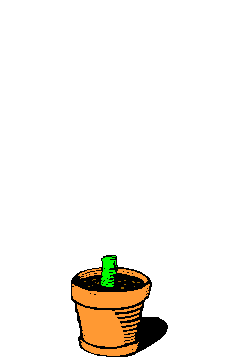

Las plantas son una parte básica y elemental de la vida sobre nuestro planeta. Sin ellas, nada podría ser como lo conocemos, ni para el ser humano ni para ninguno de los otros seres vivos. Por tanto, las plantas tienen una gran importancia en la Tierra, pues aportan desde oxígeno y alimento hasta refugio y medicinas, entre muchos más beneficios.
¿Querés conocer más acerca de las platas? En Mundo Plantas© podrás encontrar información sobre plantas de interior y exterior, conocer sus cuidados básicos y comprarlas desde la comodidad de tu casa